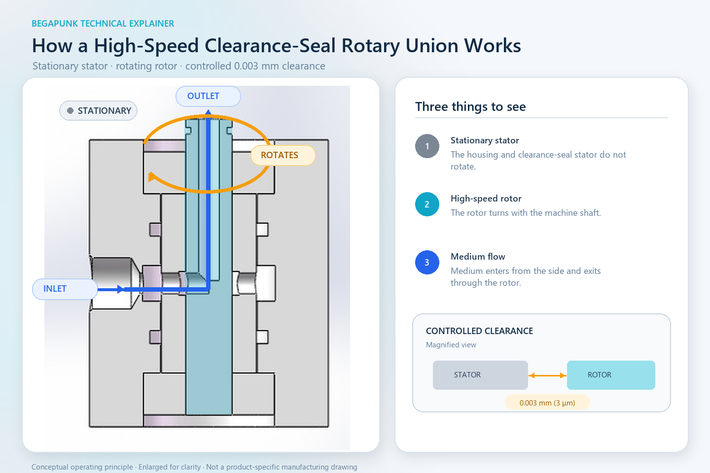

Краткий ответ: В показанной конструкции наружный статор остаётся неподвижным, а центральный ротор вращается с высокой частотой. Рабочая среда поступает через боковой вход, проходит в радиальном направлении в канал ротора, а затем выходит вверх по его осевому каналу. Статор щелевого уплотнения отделён от ротора контролируемым односторонним радиальным зазором 0,003 мм. Он ограничивает утечку через зазор без скользящего контакта в этой зоне.
Такой принцип может снизить трение и износ на вращающейся уплотнительной границе, но одновременно повышает значение точности, чистоты, соосности, подшипниковой опоры, давления, температуры и допустимой утечки. Схема объясняет один принцип конструкции и не означает, что все ротационные соединения Begapunk имеют одинаковое внутреннее устройство.

Что показано на схеме
- Неподвижный наружный статор: Основной корпус остаётся неподвижным относительно линии подачи рабочей среды.
- Неподвижный статор щелевого уплотнения: Эта прецизионная поверхность окружает ротор, но не вращается вместе с ним.
- Быстро вращающийся ротор: Центральная голубая деталь вращается вместе с машиной и содержит внутренний канал.
- Подшипники: Подшипниковая система поддерживает и позиционирует ротор для вращения вокруг заданной оси.
- Статические уплотнительные кольца: Они ограничивают утечку в неподвижных соединениях и не являются динамической границей ротор–статор, показанной односторонним радиальным зазором 0,003 мм.
Как рабочая среда переходит с неподвижной стороны в ротор
Шаг 1 — Боковой вход
Рабочая среда поступает через вход на неподвижной стороне корпуса. Подводящий трубопровод не должен вращаться вместе с машиной.
Шаг 2 — Радиальный переход
Рабочая среда проходит радиально из неподвижной входной зоны в канал ротора. Прецизионный зазор ограничивает нежелательный поток между неподвижной и вращающейся поверхностями, позволяя ротору вращаться без трения о статор щелевого уплотнения.
Шаг 3 — Осевой выход
Внутри ротора поток поворачивает в осевой канал и выходит вверх к вращающемуся оборудованию. Это обеспечивает непрерывную подачу без наматывания наружного шланга вокруг вала.
Схема показывает принцип одного канала. В многоканальном ротационном соединении требуются независимые каналы и соответствующее разделение между ними. Число каналов, назначение портов, давление, рабочая среда и схема монтажа должны быть подтверждены для конкретной машины.
Зачем использовать бесконтактный зазор вместо трущегося уплотнения?
Обычное контактное уплотнение создаёт барьер, прижимая уплотнительный элемент к движущейся поверхности. Это может эффективно ограничивать утечку, но относительное движение создаёт трение, нагрев и износ. Результат зависит от материала уплотнения, качества поверхности, смазывания, давления, температуры, скорости скольжения и режима работы.
Бесконтактное щелевое уплотнение использует другой баланс. Между неподвижной и вращающейся поверхностями оставляют очень малый расчётный зазор. Поскольку при нормальной работе поверхности в этой зоне не соприкасаются, здесь отсутствует износ от скользящего контакта. Это может быть важно при частотах вращения, когда трение и нагрев контактного уплотнения становятся ограничивающими факторами.
Важное ограничение: «Бесконтактное» не означает «без утечек». Щелевое уплотнение ограничивает поток через узкое дросселирующее сечение, но не является герметичным барьером. Фактическая утечка зависит от геометрии и длины зазора, перепада давления, свойств рабочей среды, температуры, положения ротора и всей внутренней конструкции.
Что означает односторонний радиальный зазор 0,003 мм?
В показанной конструкции это радиальное расстояние с одной стороны между неподвижной уплотнительной поверхностью и вращающимся ротором. Это не полный диаметральный зазор.
Вся вращающаяся система должна сохранять заданное расстояние при сборке и в работе. Важны соосность ротора и статора, точность и внутренний зазор подшипников, биение ротора и прогиб вала, форма и шероховатость поверхностей, точность сборки, тепловое расширение, упругая деформация, загрязнения, вибрация и внешние нагрузки от трубопроводов.
Если рабочий зазор увеличивается
Утечка через зазор может возрасти в зависимости от давления, рабочей среды, температуры и общей геометрии.
Если рабочий зазор уменьшается
Ротор и статор могут соприкоснуться, что способно вызвать нагрев, задиры, образование частиц, нестабильный момент или повреждение прецизионных поверхностей.
Поэтому номинальный радиальный зазор — только одна часть расчёта. Не менее важны вся размерная цепь и ожидаемые условия эксплуатации.
Почему подшипники влияют на работу уплотнения
Подшипники не только обеспечивают вращение. Они задают положение ротора относительно неподвижной поверхности щелевого уплотнения. Для работы узкого бесконтактного зазора ротор должен оставаться вблизи заданной оси.
Тип и посадка подшипников, внутренний зазор или предварительный натяг, смазывание, точность монтажа, температура и внешние нагрузки могут изменять положение ротора. Прецизионная геометрия уплотнения не компенсирует несоосную систему или боковое усилие от неподдерживаемых машинных нагрузок.
Поэтому ротационное соединение не должно служить основной радиальной или осевой опорой машины, если такая функция прямо не предусмотрена утверждённой конструкцией. Шланги и трубопроводы также следует прокладывать и поддерживать так, чтобы они не передавали на соединение непредусмотренные нагрузки.
Главный компромисс: ограничение утечки и рабочий зазор
Меньший зазор может сильнее ограничивать утечку, но уменьшает запас на биение, тепловое расширение, деформацию, загрязнения и отклонения сборки. Больший зазор обеспечивает больший механический запас, однако обычно пропускает больший поток утечки.
Правильная конструкция — не просто «минимально возможный зазор». Требуется зазор, который остаётся безопасным и предсказуемым во всём утверждённом диапазоне давления, частоты вращения, температуры, рабочей среды, режима работы и производственных отклонений и одновременно соответствует критерию утечки проекта.
Высокоскоростное щелевое уплотнение нельзя выбирать только по частоте вращения. Инженерная проверка должна учитывать совокупные условия работы. Отдельно указанные максимальное давление и максимальная частота вращения не означают, что оба значения допустимы одновременно.
Когда можно рассматривать этот принцип
Ротационное соединение с бесконтактным щелевым уплотнением можно рассматривать, когда требуется непрерывная передача рабочей среды, а при заданной частоте вращения существенными ограничениями становятся трение скольжения, температура уплотнения или контактный износ.
Пригодность всё равно определяется реальными условиями. Такая схема может не подойти, если требуется практически нулевая утечка, среда содержит частицы, вал значительно перемещается, температура не контролируется либо невозможно обеспечить требуемую точность подшипников и соосность. В таких случаях могут быть предпочтительнее контактное уплотнение, другая бесконтактная геометрия, дополнительная фильтрация, контролируемый дренаж или иной способ передачи среды во вращающийся узел.
Не существует одного типа уплотнения, оптимального для всех машин.
Какие данные нужны до выбора конструкции
- Рабочая среда и её состав
- Число независимых каналов
- Максимальное и нормальное рабочее давление
- Максимальная и непрерывная частота вращения
- Температура рабочей среды и окружающей среды
- Продолжительность включения и характер движения
- Допустимая наружная и межканальная утечка
- Требуемый расход или допустимая потеря давления
- Доступное монтажное пространство
- Требования к портам на неподвижной и вращающейся сторонах
- Вал, монтаж и устройство фиксации от проворачивания
- Чертёж машины или интерфейсная 3D-модель
- Требования к чистоте, фильтрации и обслуживанию
Эти данные позволяют оценить пригодность щелевого уплотнения и возможность поддерживать требуемые характеристики во всём рабочем диапазоне.
Часто задаваемые вопросы
Соприкасается ли ротор со статором щелевого уплотнения?
В предусмотренных условиях эксплуатации — нет. Производственные отклонения, биение, тепловое расширение, загрязнения и внешние нагрузки должны контролироваться так, чтобы сохранялся односторонний радиальный зазор 0,003 мм.
Обеспечивает ли бесконтактное щелевое уплотнение нулевую утечку?
Нет. Оно ограничивает утечку через узкий расчётный зазор, но без испытаний для конкретного применения его нельзя описывать как герметичное или полностью исключающее утечку.
Почему этот принцип подходит для высокой частоты вращения?
При нормальной работе в щелевой зоне отсутствует скользящий контакт, поэтому здесь нет трения и износа, характерных для контактного динамического уплотнения. Однако подшипники и другие детали имеют собственные ограничения по частоте вращения, смазыванию, температуре и ресурсу.
Подходит ли односторонний радиальный зазор 0,003 мм для любой среды и давления?
Нет. Необходимо совместно рассматривать вязкость и чистоту среды, перепад давления, температуру, требуемый расход, допустимую утечку, поведение подшипников и всю внутреннюю геометрию.
Можно ли использовать эту схему как производственный чертёж?
Нет. Это принципиальный разрез для объяснения работы. Размеры, допуски, материалы, присоединения, условия испытаний и критерии приёмки должны задаваться в чертеже и техническом соглашении конкретного проекта.
От принципа работы к выбору изделия
Передайте данные о рабочей среде, давлении, частоте вращения, температуре, числе каналов, допустимой утечке, монтажном пространстве и, если возможно, чертёж машины. Begapunk сможет оценить, является ли бесконтактное щелевое уплотнение или другая конструкция ротационного соединения более безопасным инженерным решением.